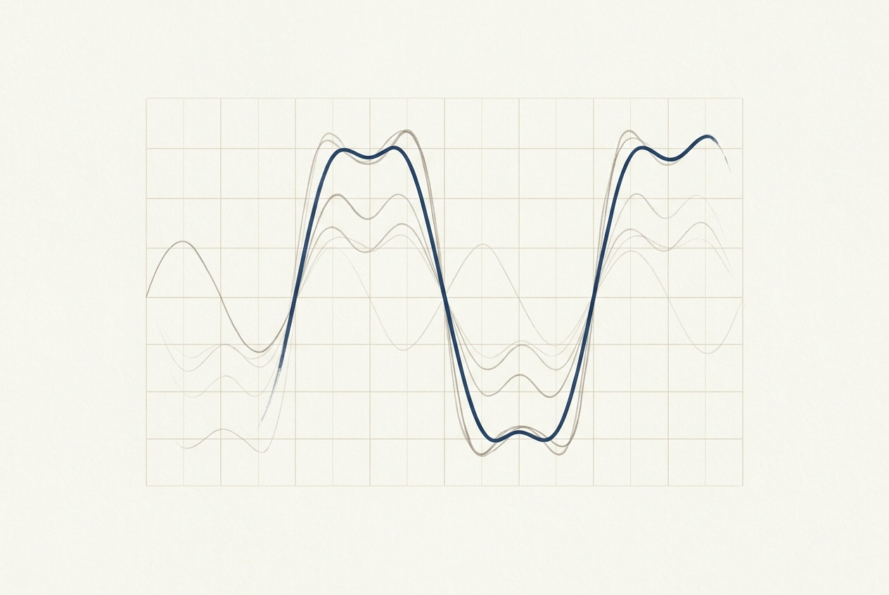

Pi 对话记录
你 · 14:32
傅里叶变换到底在做什么？给我讲讲直觉，最好能有一张可以动手调的图。
Pi · 14:32
可以把它想成「称配料」：任何一段周期信号，都能拆成一堆不同频率的正弦波——傅里叶变换做的事，就是告诉你每种频率该放多少。反过来，把这些正弦波按份量加回去，就能重新拼出原信号。
下面这张图可以动手验证：拖动「叠加项数」，看正弦波一项项叠起来，如何一步步逼近一个方波。
项数越少，波纹越圆滑；项数越多，边缘越陡、拐角越利——但拐角处始终有一圈压不下去的「过冲」，那就是吉布斯现象。
你 · 14:35
懂了。再给我画一张纸墨风格的示意图，我想存下来。
Pi · 14:35
画好了，存在 mdlog-assets/fourier-ink.png：

正弦波逐项叠加，趋近方波。
记录中 · PI